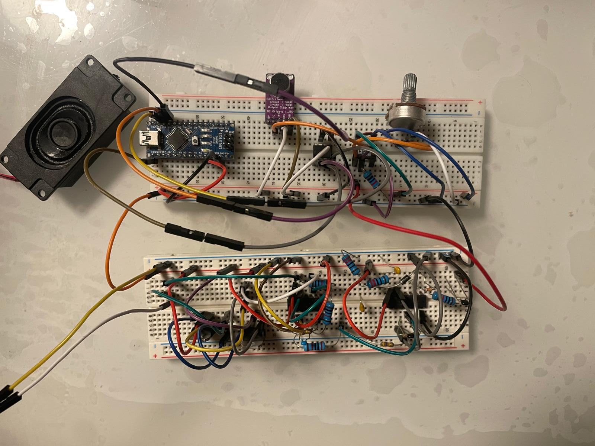

← Retour à l'accueil
Système de radio analogique avec Arduino
ECE – 1A cycle ingénieur · 2024

Objectif du projet
Reproduire un système de radio complet à partir de blocs analogiques
(diodes, transistors, filtres RC) pilotés par un Arduino, afin de
moduler et démoduler un signal sonore issu d’un microphone
puis de l’amplifier et le restituer sur un haut-parleur.
Le but était de comprendre la chaîne de traitement d’un signal radio : de la captation
audio à la démodulation, en passant par l’amplification et le contrôle via microcontrôleur.
Contexte
Projet réalisé en 1ère année de cycle ingénieur à l’ECE, en groupe.
Il s’inscrit dans un module mêlant électronique analogique et
systèmes embarqués, avec pour objectif de manipuler concrètement diodes,
transistors, filtres et Arduino autour d’un cas d’usage réel : une petite radio.
Architecture globale du système
Chaîne analogique
- Microphone électret pour capter un signal sonore (voix/musique).
- Étages d’amplification à transistors pour amener le signal à un niveau exploitable.
- Bloc de modulation (par exemple amplitude) à l’aide de transistors et de composants passifs.
- Bloc de démodulation (détection d’enveloppe) à base de diode + filtre RC.
- Amplificateur de puissance final pour attaquer un haut-parleur.
Rôle de l’Arduino
- Génération d’un signal (porteuse basse fréquence) ou pilotage de certaines parties du montage.
- Mesure de tensions ou d’enveloppes via entrées analogiques (surveillance / debug du montage).
- Gestion d’entrées utilisateur (boutons / potentiomètres) pour
agir sur le volume ou le mode de fonctionnement.
- Affichage d’informations de debug sur le port série / moniteur série.
Réalisation et fonctionnalités
- Captation audio Câblage du microphone, polarisation et premier étage
d’amplification pour obtenir un signal propre.
- Modulation Injection du signal audio sur une « porteuse » via un montage à
transistor, de façon à simuler un signal modulé.
- Démodulation Utilisation d’une diode en détection
d’enveloppe, suivie d’un filtre passe-bas (RC) pour retrouver le signal audio.
- Amplification finale Ajout d’un étage d’amplification de puissance pour
alimenter un haut-parleur et restituer le son modulé/démodulé.
- Contrôle & mesures Lecture de points clés du montage via Arduino, tracé ou
affichage de valeurs (tension d’enveloppe, niveau d’entrée, etc.).
- Tests & validation Utilisation d’un oscilloscope et du moniteur série pour
vérifier la forme des signaux à chaque étape (avant/après modulation, après démodulation).
Aspects électroniques mis en avant
- Dimensionnement des résistances, condensateurs et choix des diodes/transistors en fonction
des niveaux de tension et de la bande passante audio.
- Analyse des courbes de réponse en fréquence des filtres RC (coupe-bas / coupe-haut).
- Compréhension du rôle des diodes dans la démodulation (détection d’enveloppe).
- Stabilisation du montage : gestion du bruit, alimentation, masses et découplage.
Rôle personnel & compétences développées
- Câblage et test de la partie analogique (diodes, transistors, filtres, HP).
- Programmation en C/Arduino pour le pilotage et la mesure du montage.
- Lecture et interprétation de signaux sur oscilloscope.
- Compréhension pratique de la chaîne : micro → modulation → démodulation → haut-parleur.
- Rédaction d’un schéma complet et explication du fonctionnement bloc par bloc.
Résultats
Le montage final permet de transmettre un signal audio à travers la chaîne de
modulation/démodulation et d’obtenir un son audible sur le haut-parleur.
Le projet montre la capacité à combiner électronique analogique (diodes,
transistors, filtres) et microcontrôleur (Arduino) pour réaliser un système radio simplifié.
Arduino
C / Arduino IDE
Diodes
Transistors
Modulation
Démodulation
Électronique analogique
Oscilloscope